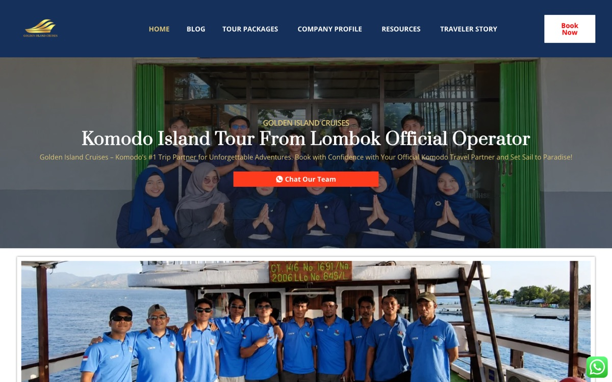

Cost of Living Map
One map instead of twenty tabs: rent, food, fuel, salaries and childcare for 60 countries and 500 cities, converted into any of 28 currencies, with side-by-side comparison of up to three places.
Sydney · Brisbane · Lombok
Strategy consultant. Founder. Builder.
By day I help billion-dollar organisations transform. The rest of the time I run a sailing venture in Indonesia and build software that makes complicated things simple.
The venture · Lombok, Indonesia
In late 2024 I co-founded a maritime tourism company sailing the waters between Lombok and Komodo National Park — four-day voyages aboard traditional Phinisi boats, past pink-sand beaches, Padar Island and the Komodo dragons themselves.

The business is designed around a simple idea: tourism should leave the place better than it found it. Our boats are built by traditional Sulawesi shipwrights, our crew is hired locally, and the operating model is structured so staff share in the long-term upside through a partnership-pathway equity scheme.
Licensed by Indonesia’s Ministry of Marine Affairs and Fisheries, with a cross-functional team of thirty across operations, sales, marketing and crew — I lead strategy, financial modelling and governance from valuation and cashflow forecasting through to dynamic seasonal pricing.
Side projects · designed & shipped end-to-end
Live, public and free to use. Each one started as a real problem — researching where to live, planning travel, rostering a team — and became a finished product: data pipeline, design and deployment included.
One map instead of twenty tabs: rent, food, fuel, salaries and childcare for 60 countries and 500 cities, converted into any of 28 currencies, with side-by-side comparison of up to three places.
Pick your passport and the whole world colours itself in — visa-free, visa on arrival, eVisa or embassy-required — for every destination on Earth, down to capital-city markers as you zoom.
Type “can’t work Saturdays, on leave 1–15 July” and the roster greys itself out. A scheduling tool for cafés, clinics and shift teams that replaces the manual Excel-highlighting ritual.
Fifty of the world’s great galleries and museums on one interactive map — each with its history, architecture and a filterable carousel of its best-known artworks, by artist, era and movement.
A pixel universe that builds itself out of my AI coding activity — every token of work becomes cosmic energy that assembles the Sun, the planets and eventually the Laniakea Supercluster, block by block.
The journey so far
Lombok, Indonesia
Scaling a maritime tourism operator — capital raising, valuations and cashflow forecasting, dynamic pricing, and a social-enterprise model built on local employment and cultural preservation.
Brisbane, Australia
Co-leading an $18m finance and supply-chain transformation across a $1B+ healthcare network — 600+ requirements shaped into a strategic roadmap, with board-level briefs prepared for the CFO.
Brisbane, Australia
Promoted in under two years. Delivered requirements, options analyses and cost models across health, emergency services and defence — and founded the firm’s internal Tech Advisory team, running its first workshops on generative AI.
Sydney, Australia
Go-to-market strategy for an EdTech venture and competitive analysis feeding a pre-seed raise at a $13.5m valuation.
Brisbane, Australia
Hands-on operator work for construction-industry clients: a Salesforce implementation, ISO 9001/14001/45001 certifications, a 48% manufacturing cost reduction, and bespoke quoting tools.
Singapore
National service in Supply Command HQ — procurement, auditing and risk, and a redesign of the tender process.
About
English & MandarinFinancial modellingD365SalesforceSAP AribaJiraMiroSPSSGenerative AIWeb development
Social entrepreneurship, emerging tech, and the space where the two overlap — building things that are commercially sound and leave the community around them better off.
Contact
Open to conversations about strategy roles, ventures and investment in Golden Island Cruises.